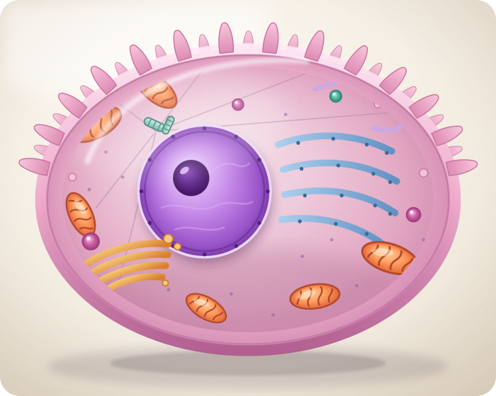
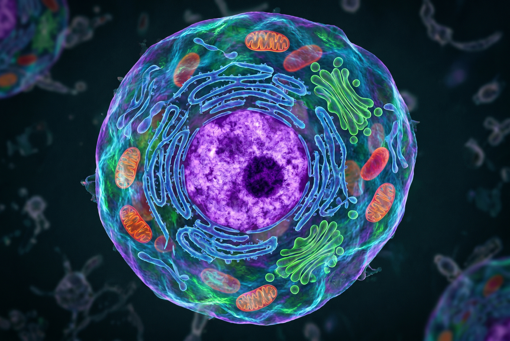

Modelo tridimensional
Compartimentos que trabajan juntos
No tiene pared celular ni cloroplastos: su membrana flexible permite formas variadas y comunicación con otras células.
En el núcleo se encuentra el ADN. El retículo endoplasmático y los ribosomas participan en la fabricación de proteínas; el aparato de Golgi las modifica y distribuye. Las mitocondrias producen ATP mediante la respiración celular.
Las células animales pueden especializarse. Una neurona prioriza la comunicación; una célula muscular, la contracción; un glóbulo rojo, el transporte de oxígeno. La estructura se relaciona con la función.
MembranaFlexible y selectiva, sin pared rígida.
MitocondriasProducción de ATP y respiración celular.
GolgiModifica, clasifica y envía moléculas.
LisosomasDigestión y reciclaje de materiales.

Arrastrá para explorar · rotación automática
Vista didáctica, no a escala

Para relacionar
De una célula a un organismo
La especialización no elimina las funciones básicas: cada célula necesita intercambiar sustancias, obtener energía, fabricar proteínas y conservar su información genética.
NeuronaProlongaciones para transmitir señales.
MúsculoMuchas mitocondrias para disponer de ATP.
EpitelioUniones estrechas y función de barrera.